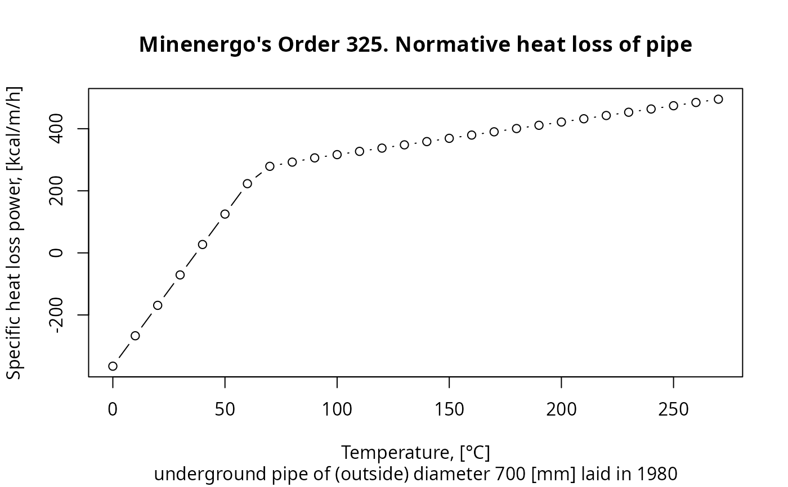

Calculate normative heat loss of pipe through the thermal insulation that is legally affirmed by Minenergo Order 325.
Usage
m325nhl(
year = 1986,
laying = "underground",
exp5k = TRUE,
insulation = 0,
d = 700,
temperature = 110,
len = 1,
duration = 1,
beta = FALSE,
extra = 2
)Arguments
- year
year when the pipe is put in operation after laying or total overhaul. Type:
assert_integerish- laying
type of pipe laying depicting the position of pipe in space:
air,channel,room,tunnel,underground.
Type:
assert_subset.- exp5k
pipe regime flag: is pipe operated more that 5000 hours per year? Type:
assert_logical.- insulation
insulation that covers the exterior of pipe:
0no insulation
1foamed polyurethane or analogue
2polymer concrete
Type:
assert_integerandassert_subset.- d
nominal (outside) diameter of pipe, [mm]. Type:
assert_double.- temperature
temperature of heat carrier (water) inside the pipe, [°C]. Type:
assert_double.- len
length of pipe, [m]. Type:
assert_double.- duration
duration of heat loss, [h]. Type:
assert_double.- beta
should they consider additional heat loss of fittings? Type:
assert_logical.- extra
number of points used for temperature extrapolation:
2,3, or4. Type:assert_choice.
Value
Normative heat loss of cylindrical pipe during duration,
[kcal]. If len of pipe is 1 m (meter) as well as
duration is set to 1 h (hour) (default values) then the
return value is also the specific heat loss power,
[kcal/m/h], prescribed by
Minenergo Order 325.
Type: assert_double.
Details
Temperature extrapolation and pipe diameter interpolation are leveraged
for better accuracy. Both are linear as it dictated by
Minenergo Order 325.
Nevertheless, one could control the extrapolation behaviour by extra
argument: use lower values of extra for soft curvature near
extrapolation edges, and higher values for more physically reasoned
behaviour in far regions of extrapolation.
See also
Other Minenergo:
m278hlair(),
m278hlcha(),
m278hlund(),
m278insdata,
m278inshcm(),
m278soildata,
m325beta(),
m325nhldata,
m325nvl(),
m325nxdata
Examples
library(pipenostics)
## Consider a one-meter length pipe with
pipe_diameter <- 700.0 # [mm]
pipe_dating <- 1980
pipe_laying <- "underground"
## Linear extrapolation adopted in Minenergo's Order 325 using last two
## points:
operation_temperature <- seq(0, 270, 10)
qs <- m325nhl(
year = pipe_dating, laying = pipe_laying, d = pipe_diameter,
temperature = operation_temperature
) # [kcal/m/h]
plot(
operation_temperature,
qs,
type = "b",
main = "Minenergo's Order 325. Normative heat loss of pipe",
sub = sprintf(
"%s pipe of (outside) diameter %i [mm] laid in %i",
pipe_laying, pipe_diameter, pipe_dating
),
xlab = "Temperature, [°C]",
ylab = "Specific heat loss power, [kcal/m/h]"
)

## Consider heat loss due fittings:
operation_temperature <- 65 # [°C]
m325nhl(
year = pipe_dating, laying = pipe_laying, d = pipe_diameter,
temperature = operation_temperature, beta = c(FALSE, TRUE)
) # [kcal/m/h]
#> [1] 272.0 312.8